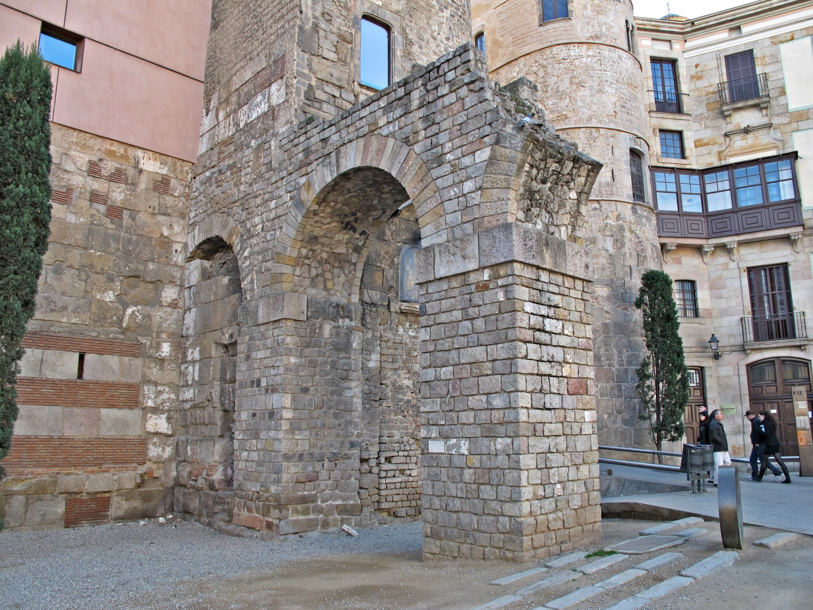

¡Exacto! BARCINO.
Estás ante la puerta por donde entraba el agua, la sangre de la ciudad.
🏛️ Archivos de la Ciudad:
Las venas de piedra que ves ante ti son vestigios de un milagro de la ingeniería. Este acueducto, construido en el siglo I, transportaba el agua del río Besós desde Montcada durante más de nueve siglos, manteniendo viva a Barcino mucho después de la caída de Roma.
Pero el tesoro no está aquí, a la vista de todos. Está en el lugar más sagrado.
Utiliza la clave para saber el camino a seguir:
B = II | A = I | I = IX